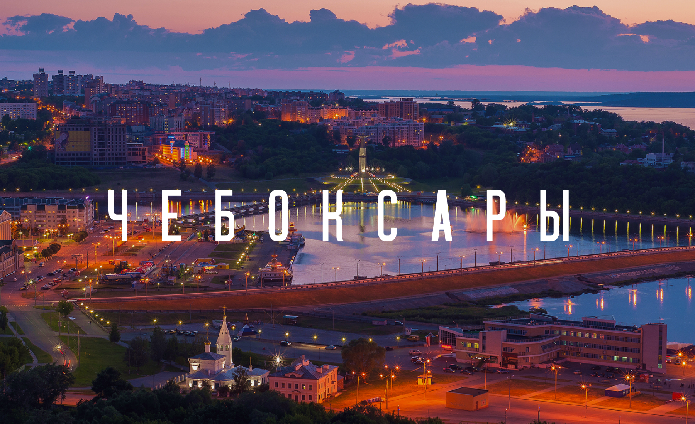

Интересные факты о Чебоксарах

- Чебоксары были основаны в 1469 году как укрепленный поселок на берегу реки Волги.
- Имя города происходит от чувашского слова "чӗбӗксӗр", что означает "крепость на берегу".
- С течением времени Чебоксары стали важным торговым и культурным центром Чувашии.
- В 1781 году Чебоксары были переоснованы Екатериной II и стали административным центром Чувашской области. В это время началось активное развитие города как административного и культурного центра региона.
- Во время Великой Отечественной войны Чебоксары были эвакуированы, а после войны город активно восстанавливался и развивался. В 1965 году Чебоксары получили статус города республиканого подчинения.